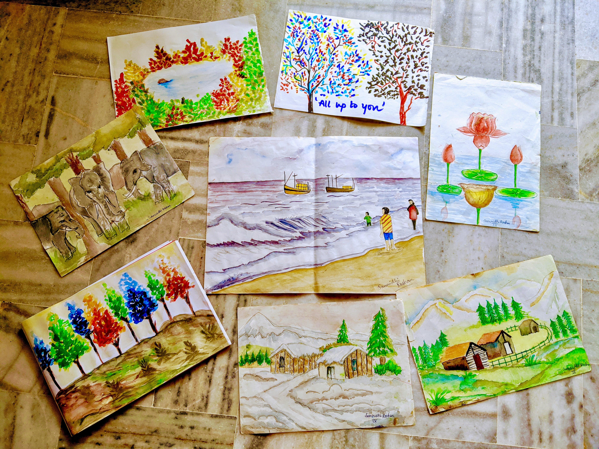

Have experience with pencil shading, pastel colors, oil painting, glass painting, and water colors.
Check out some of my paintings! (Hover for colors)

Can play the traditional Indian instrument - The Harmonium.
Love to travel and take pictures!
Want to know an interesting thing about visuals? It is abstract! Isn't that the beauty of art and our minds: the unique interpretations.
Check out my photography account!
@apogees29
It is a club in the Girl Up campaign chain, a United Nations initiative.
Group of girls and some boys trying to empower young underprivileged local girls by teaching about rights, education, opportunities, and fairness.
Virtual Internship in Cloud Computing. Did a mini project related to cloud computing consultancy.